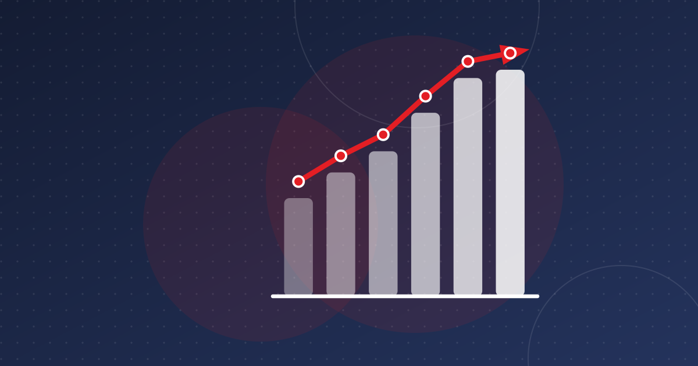

Tunisia Fintech Key Numbers: Accounts, Cards, Mobile, Cash
Fewer than four in ten adults have an account, mobile payments grew 80% in 2025, and cash keeps rising. The essential, sourced figures on Tunisian fintech.

Key takeaways
- 37.8% of Tunisian adults had an account in 2024 (Findex), with a 23-point gap between men (49.6%) and women (26.6%).
- Mobile payments grew 80.5% in number in 2025, but there were only 469,000 mobile wallets.
- Online card payments reached 1,375 million dinars in 2025 (+31%), while cards overall handled 29.5 billion dinars.
- Cash in circulation passed 30 billion dinars in August 2026 even as cheque use collapsed by two-thirds in 2025.
These are the key numbers behind Tunisian fintech: who has an account, how people pay, how connected they are and how much cash still circulates. Each figure comes from the Central Bank of Tunisia (BCT), the World Bank or DataReportal and is dated. Together they describe a country with near-universal mobile access but limited formal account use, where electronic payments are growing fast from a low base.
Accounts: fewer than four in ten adults
According to the World Bank's Global Findex 2025, based on 2024 survey data, 37.8% of Tunisian adults had an account at a financial institution or a mobile-money provider. That is almost unchanged from 36.9% in both 2017 and 2021. The World Bank estimates that about 5.7 million of Tunisia's 9.2 million adults are unbanked.
The gender gap is wide:
- 49.6% of men had an account in 2024;
- 26.6% of women did.
A 23-point gap is large even by regional standards. It suggests that products designed for women, and distribution beyond bank branches, are a real opportunity. We look at this in more detail in financial inclusion in Tunisia.
A word of caution: Tunisian sources sometimes quote other rates, such as the 36% from 2021 or the "four in ten" figure. Always check which survey year and definition is behind a number.
Cards and terminals
Cards are still the main electronic payment instrument. The BCT's 2025 annual report, as reported by Tuniscope and Webmanagercenter, shows:
- 5.85 million domestic bank cards in circulation, 362,000 more than in 2024;
- 164.9 million card transactions (+8.9%) worth 29.5 billion dinars (+12.3%);
- 43,116 payment terminals (TPE), up 10%;
- about 3,300 ATMs, a number that has barely moved.
For about 12.3 million people, 43,000 terminals is thin coverage. Many small merchants still accept only cash.
Source: BCT annual report 2025, via Webmanagercenter and La Presse
View the data
| Label | Value |
|---|---|
| Mobile payments (number) | 80.5% |
| Mobile payments (value) | 58.6% |
| Online card payments (value) | 31% |
| Mobile wallets (number) | 26.8% |
| Card payments (value) | 12.3% |
| Transfers (number) | 11.1% |
Mobile payments and wallets
Mobile payments are the fastest-growing channel, but they remain small. In 2025, according to the BCT:
- 8.4 million mobile payment transactions (+80.5%);
- worth 1,769 million dinars (+58.6%);
- through 469,000 mobile wallets (+26.8%).
There are fewer than half a million wallets in a country of 15.5 million mobile connections. That gap is why new entrants such as Ooredoo's payment subsidiary, approved in March 2026, are watched closely. See our overview of mobile payments in Tunisia.
E-commerce and online payments
Online card payments reached 1,375 million dinars in 2025, up 31%, according to the BCT annual report. In the first quarter of 2025, the BCT's payments bulletin counted 1,342 active e-commerce merchant sites. Much online shopping is still paid in cash on delivery, so these figures measure only the part of e-commerce that is paid digitally. More in e-commerce payments in Tunisia.
Internet and mobile connectivity
The infrastructure is not the bottleneck. DataReportal's Digital 2026: Tunisia report, using data from October 2025, counts:
- 10.4 million internet users, or 84.3% of the population;
- 15.5 million cellular connections, equal to 125% of the population (GSMA Intelligence);
- 7.83 million social media user identities;
- a median mobile download speed of 67.12 Mbps, against 16.99 Mbps on fixed connections (Ookla).
Mobile internet is now faster than fixed broadband. For fintech, that makes the smartphone the main channel.
Cash and cheques: the other side of the ledger
Despite the growth in digital payments, cash keeps rising. Banknotes and coins in circulation reached 28.5 billion dinars on 24 March 2026, up 21.8% in a year, and 30.2 billion dinars at the end of August 2026, according to BCT data reported by La Presse.
Cheques, meanwhile, collapsed in 2025 after the cheque law reform: their number fell 67.5% and their value 58.8%. Bills of exchange (+161% in number) and transfers (38.5 million operations, +11.1%) took over part of that role. Whether the money that left cheques moved to digital channels or to cash is a question we explore in cash and the cashless push.
What the numbers mean for founders
- The market is under-served, not under-connected. With about 84% of people online and 125% mobile penetration, but fewer than 40% of adults holding an account, distribution and trust matter more than technology.
- Women are the biggest gap. Twenty-three percentage points separate men and women in account ownership.
- Digital is growing fast, but so is cash. Growth rates of 30–80% in online and mobile payments sit next to a cash stock that rose by more than a fifth in a year.
- Check the date on every number. Findex is updated every three years. BCT figures come out yearly or quarterly and are sometimes revised.
Frequently asked questions
What percentage of Tunisians have a bank account?
According to the World Bank Global Findex 2025, 37.8% of adults in Tunisia had an account at a financial institution or mobile-money provider in 2024. The rate was 49.6% for men and 26.6% for women.
How many bank cards are there in Tunisia?
The Central Bank of Tunisia counted about 5.85 million domestic bank cards in circulation at the end of 2025, up by about 362,000 over the year. They were used for 164.9 million transactions worth 29.5 billion dinars.
How many people use the internet in Tunisia?
DataReportal's Digital 2026 report counts 10.4 million internet users in Tunisia as of October 2025, or 84.3% of the population, and 15.5 million cellular connections.
Sources
- Account ownership at a financial institution or with a mobile-money-service provider (FX.OWN.TOTL.ZS) — World Bank (Global Findex)
- Tunisia: Global snapshot of indicators and enabling regulations — World Bank
- BCT : le chèque s'effondre en Tunisie, les virements et la lettre de change prennent le relais en 2025 — Webmanagercenter
- Paiement : les chiffres de 2025 (rapport annuel de la BCT) — Tuniscope
- Digital 2026: Tunisia — DataReportal
- Les chiffres clés du bilan de la BCT à fin août 2026 — La Presse via AllAfrica
This article is for information only and is not legal, financial or investment advice. Figures are dated and sourced; check the latest official publications before making decisions.